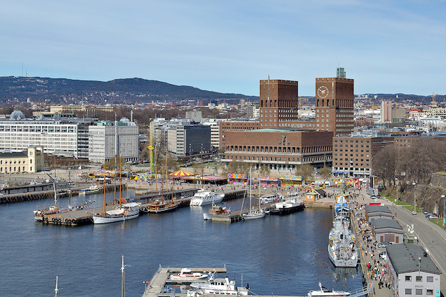
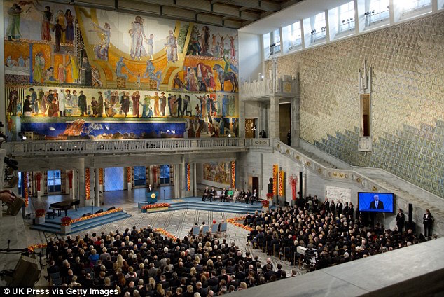
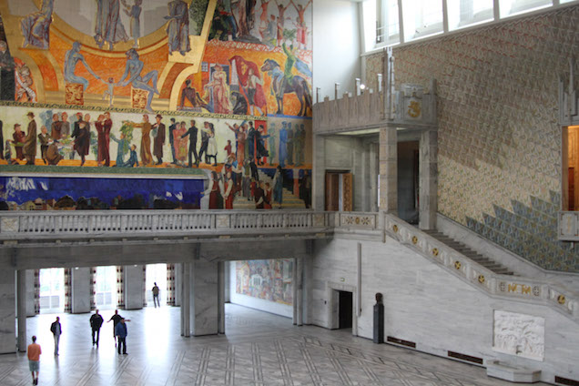
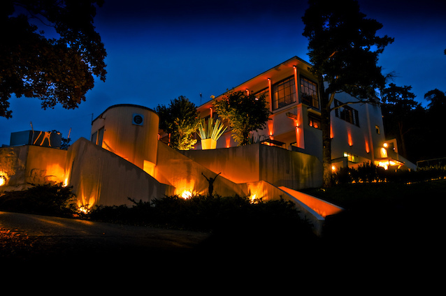
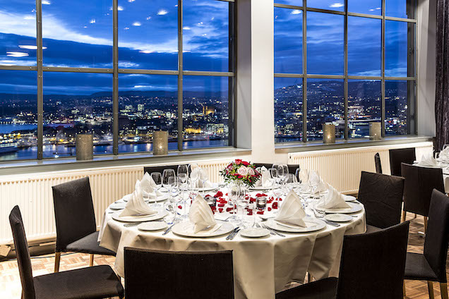
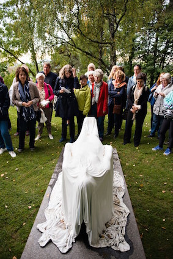

Social Program
June 30th, 19:00 - Conference reception in Oslo City Hall
Oslo City Hall (Norwegian: Oslo rådhus) houses the city council, city administration, and art studios and galleries. The construction started in 1931, but was paused by the outbreak of World War II, before the official inauguration in 1950. Its characteristic architecture, artworks and the Nobel Peace Prize ceremony, held on 10 December, makes it one of Oslo's most famous buildings.It is located a few minutes walk from the “Nationaltheatret” subway station.
|  |  |  |
July 1st, 19:00 - Conference banquet at Ekeberg restaurant and a visit to Ekebergparken
Ekeberg restaurant is located in the hills just above Oslo, with a view of the inner Oslo fjord, the city and the Operahouse. You can take public transportation: for example, the tram 18 will get you there (stop Ekebergparken) in 24 minutes from the conference venue. There is a relatively short walk up the (rather steep) hill to the restaurant through the beautiful Ekeberg sculpture park.Ekebergparken sculpture park is a national heritage park with a panoramic view of Oslo. The park has been initiated and financed by property director and art collector Christian Ringnes. It is located in a wooded area of 25.5 acres, and a total of 31 sculptures were installed when the opening ceremony took place in 2013.
|  |  |  |